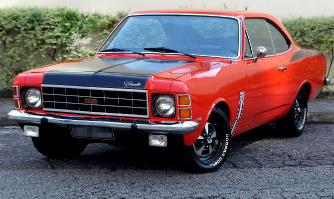

Lançado em novembro de 1968 no VI Salão do Automóvel, o Chevrolet Opala foi o primeiro carro de passeio da General Motors no Brasil. Ícone de luxo e desempenho,
combinava a estrutura do Opel Rekord alemão com o estilo americano, tornando-se famoso por seu motor seis cilindros e versões marcantes como SS e Diplomata, produzidos até 1992..
